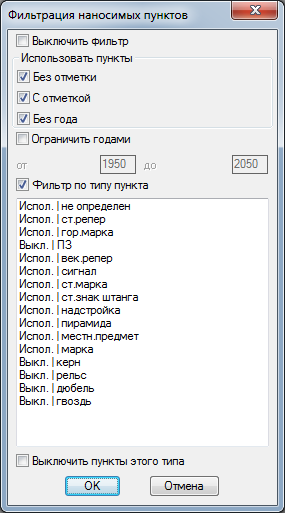
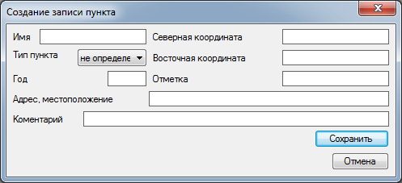
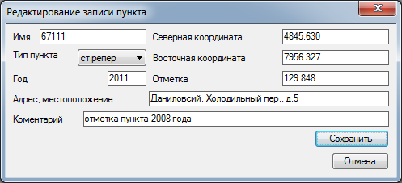
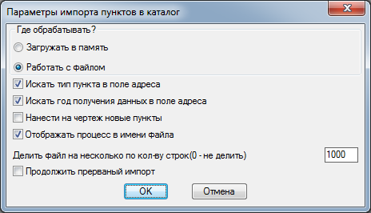
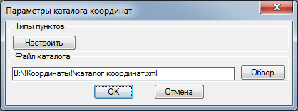
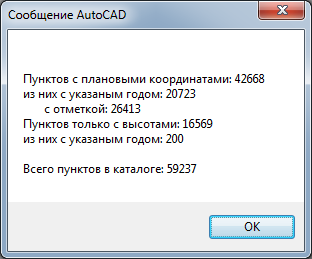

Команда: tool_katalog_coor
Команда: tool_katalog_coorКоманды по работе с каталогом исходных пунктов г.Москва
Небольшая панель инструментов появляется по нажатии кнопки.
Откуда и зачем: есть такая организация МосГорГеоТрест (МГГТ), являющаяся монополистом в геодезии по городу Москве. Заказчик требует, чтобы на исполнительной стоял штамп МГГТ. Чтобы сдать в МГГТ материал надо предоставить выписку с исходными пунктами купленую у них же. В жизни частенько случаются ситуации когда работы уже надо делать завтра, а получение выписки дело нескольких дней (безналичный расчет). Выход из ситуации: за два десятка лет существования организации накопилось некоторое количество выписок пунктов по городу и для фарсмажорных (каждая третья) ситуаций можно использовать эти данные, пока не получены свежие.
Итак имеем ситуационный план города взятый из интернета, перебитые в текстовый файл с бумажных бланков координаты пунктов и каталог пунктов найденный на древнем компьютере в офисе (почти археология). "Причесываю" древний каталог чтобы в поле координат не было "----" и всякого мусора, при этом в каталоге не указано откуда координаты и в каком году получены (если сравнить координаты полученые в МГГТ за разные года они отличаются).
Попытка просто перевести все пункты в COGO-точки привела к тому что dwg файл (больше 50Мб размером) потяжелел на десяток мегабайт и открываться стал в четыре раза дольше. При этом выяснилось что в каталогах есть пункты с одинаковым именем (номером) расположеные в разных местах города/пригорода. И вообще чертеж с таким количеством cogo-точек (тогда около 12000 шт.) стал заметно подтормаживать.
Эксперементально выявил, что блоки с атрибутами обрабатываются на много быстрее cogo-точек. Но значения координат в атрибутах никак не связаны с действительным положением блока на плане т.е. при исправлении координат пункта делать это надо два раза в атрибуте и координате расположения блока. Что не хорошо.
По всякому прикидывал и пришел к такой схеме - все данные пунктов хранятся в отдельном xml файле поделенные на квадраты по 5х5км что убыстряет поиск пунктов по плановому положению. На кнопки разбил функции по работе с каталогом. Кнопки на отдельной панельке появляющейся по нажатии на кнопку. Панелька "виртуальная" живет только в текущем сеансе AutoCAD'а.
Команда: tool_katalog_coor

Перечислю по порядку (слева на право) все кнопки панели.
Нанести пункты
Чертит в текущем чертеже пункты каталога. Можно нанести пункты вокруг указанной точки на определенное рассояние. Или весь каталог скопом. Добавлен фильтр который позваляет регулировать какие пункты нужны а какие не очень. По умолчанию фильтр отключен.
Команда: draw_punkts_by_square
Укажи точку в центре квадрата или [Весь каталог/Фильтр]<Enter-Выход>:
 Выбитает Весь каталог что бы нанести весь каталог. При выборе параметра Фильтр в открывшемя окне можно задать параметры пунктов которые не надо отображать.
Выбитает Весь каталог что бы нанести весь каталог. При выборе параметра Фильтр в открывшемя окне можно задать параметры пунктов которые не надо отображать.

По умолчанию фильтр выключен.
Выключить фильтр - если убрать фильтр будет включен.
Без отметки - если снять все пункты с не установленой отметкой будут проигнорированы.
С отметкой - если снять все пункты с известной отметкой будут проигнорированы.
Без года - если снять все пункты без указания года получения сведений будут проигнорированы.
Ограничить годами - если установить галочку все пункты год получения сведений которых не будет попадать в интервал указанный ниже будут проигнорированы.
Фильтр по типу пункта - если поставить галочку использует данные из окна ниже и игнорирует пункты перед которыми стоит "Выкл.".
Выбрав нужный пункт в окне и галочкой Выключить пункты этого типа устанавливается фильтрация по типам пунктов.
По нажатии OK настройки фильтра будут сохранены во внешнем файле и будут доступны из любого чертежа.
Если пользователь указал точку будет предложено ввести величину выборки.
Введи длинну стороны квадрата выборки в км <2.0>:
Указывает размер выборки как сторону квадрата с указанной точкой в центре. Размер стороны не должен превышать 10 км - могут появиться пробелы в районе точки.
Нанесено пунктов: количество нанесенных пунктов
После работы программы (может быть весьма продолжительной в зависимости от величины каталога и зоны выборки) будет выведено количество нанесенных пунктов.
Вычистить пункты
Удаляет все блоки соответствующие пунктам с чертежа. Сам каталог не редактируется.
Команда: clear_punkts
После работы будет сообщено сколько пунктов удалено или:
Нет пунктов для удаления!
Добавить пункт
Процедура добавления пункта в базу.
Команда: add_puncts_in_katalog

Поля окна соответствуют атрибутам блока и данным пункта в базе.
После нажатия OK пункт будет добавлен в базу и нанесен на текущий чертеж. Внимание, при добавлении не происходит сравнение с пунктами базы, предпологается что пользователь сначала убедился что данного пункта нет на этих координатах, а потом решил его добавить.
Редактировать пункт
Позволяет отредактировать данные указанного пункта в базе. Перед запуском команды наносим пункты с помощью Нанести пункты.
Команда: edit_punkts_of_katalog
Выбери блок пункта:
Выбирает блок пункта который надо отредактировать.

Поля окна соответствуют атрибутам блока и данным пункта в базе.
После нажатия OK данные пункта будут заменены в базе и на текущем чертеже.
Удалить пункт
Удаление указанного (нанесенного) пункта из базы. Перед запуском команды наносим пункты с помощью Нанести пункты.
Команда: del_punkts_of_katalog
Выбери блок пункта:
Выбирает блок пункта который надо удалить.
Данные пункта будут удалены из базы и с текущего чертежа. Предлагаю несколько раз подумать прежде чем удалять пункт из базы. Даже если вы абсолютно уверены что пункта нет лучше в коментарии написать что "пункт уничтожен" или "не найден" но чтобы пункт остался в базе. В ситуации когда другой геодезист решит поделиться с вами своими записями и у него этот пункт не будет удален в вашу базу он обязательно добавится но уже без пометки о уничтоженности.
Импорт
Импортирует пункты из текстового файла.
Позволяет добавить в каталог большой массив данных из другого каталога (многие братья геодезы ведут свои записи полученых у МГГТ пунктов) при этом данные импортируемого каталога сравниваются с уже имеющимися. При добавлени каждый пункт нового каталога сравнивается с текущей базой по двум основным параметрам плановому положению и достоверности. Под достоверностью понимается год получения данных чем год больше тем данные достовернее при этом пункт с не указанным годом получения сведений имеет низший уровень достоверности. Алгоритм:
- В базе ищется пункт с точности такими плановыми координатами, что и новый если такой найден, сравнивается достоверность нового и старого пункта, по результату данные в базе могут быть обновлены до более высокой достоверности или дополнены, если в базе пункт с более высокой достоверностью, но без отметки а новый пункт имеет отметку но с низкой достоверностью отметка добавляется в базу данных этого пункта при этом в коментарии делается запись о том что отметка менее достоверна чем плановое положение.
- Если абсолютного совпадения в базе не найдено ищется пункт с приблизительно похожими плановыми координатами в радиусе 1.5 м при нахождении такого сравниваются достоверность пунктов при разной достоверности повторяется ситуация в предидущем пункте, но если достоверность одинаковая (так часто бывает когда год не указан) более достоверным считается пункт находящийся в базе и в коментарий этого пункта записываются не совпадающие данные как альтернативные.
- Если не найдено и примерных совпадений планового положения пункта, новый пункт добавляется в базу как есть.
С пунктами не имеющими плановых координат а только отметку несколько сложнее во первых их сложно сравнивать, сравниваются только пункты имеющие абсолютное сходство по имени пункта и отметке. Во вторых их не понятно как отображать на карте (плановых координат то нет). А вручную наносить столько пунктов по адресу да еще не понятно с какой стороны дома как то не улыбается. Поэтому на данный момент пункты без плановых координат складируются но никак не используется.
Чтобы импортировать новые пункты необходимо сформировать текстовый файл в ANSI кодировке, одна строка - один пункт, данные должны быть перечислены в следующем порядке: имя(номер) пункта, северная координата, восточная координата, отметка, тип пункта, место расположения (адрес), год получения данных, коментарии. Разделитель данных вертикальная черта "|". Пример:
0001|1234.560|-4321.000|101.01|ст.репер|На деревне у дедушки, на клубе|1991|Его все там знают
Если некоторые данные не известны их можно пропустить, но разделители должны быть:
0001|1234.560|-4321.000|||На деревне у дедушки, на клубе||
Пункты у которых не указана ни плановые координаты ни отметка будут проигнорированы.
Команда: import_punkts_from_file

Загружать в память или Работать с файлом - в первом случае все пункты загружаются в память во втором читаются и обрабатываются по одному. Так и не понял что быстрее результат одинаков.
Искать тип пункта в поле адреса - позволяет программе догадаться о типе пункта поискав знакомые буквы в данных адреса. Реагирует на слова "сигнал", "надстройка", "пирамида", "керн", "ПЗ", "местн.предмет" (к нему относятся "шпиль" и "громоотвод"), "марка", "рельс", "дюбель", "гвоздь".
Искать год получения данных в поле адреса - попал в руки каталог в котором год иногда встречался в адресе поэтому теперь по установке галочки конструкции типа ##[разделитель]##[разделитель]## или ##[разделитель]##[разделитель]####. Разделитель может быть "." "," "/" "-". Последние две или четыре цыфры будут приняты как год. Примеры: 1.12.2002 10/1/89 10-11-12.
Нанести на чертеж новые пункты - позволяет наносить или не наносить добавляемые пункты на чертеж при небольшом импортируемом файле позволяет визуально отследить где прибыло, при большом объеме данных тормозит обработку.
Отображать процесс в имени файла - при добавлении каталога большого объема AutoCad через некоторое время "не отвечает" между тем программа продолжает выполняться. При активной этой галочке программа создает пустой файл в имени которого пишет свои текущие действия.
Делить файл на несколько по кол-ву строк(0-не делить) - каждый следующий пункт из импортируемого каталога обрабатывается дольше, с помощью этой функщии большой каталог делится на несколько и обрабатывается по кусочкам.
Продолжить прерванный импорт - если предидущий импорт завершился не запланированно позволяет продолжить с последнего файла при этом часть данных может не попасть в базу. Рекомендую делать резервную копию перед импортом и начинать заново.
Большенство настроек появилось после того как со мной поделились каталогом размером больше 50000 пунктов в пределах которого было много дублирующей информации не говоря о дублях с моим каталогом. Несколько экспериментов "оставим на ночь" засекание за сколько обработалось сколько то пикетов что бы представить когда это все закончится. Потом терпение кончалось код переписывался добавлялись настройки запускалось за ново, как правило в начале все идет довольно бойко но чем дальше тем медленне, AutoCad выжирает больше 1.5 гига памети и еле шевелится... Окончательный вариант думаю самый быстрый но и он одолевал каталог несколько часов. Настоящие програмисты скорее всего закидают меня тапками со всякими утечками, но мне было интересно.
Выбирает необходимые параметры OK
Стандартное окно выбора файла
Экспорт
Экспортирует все пункты каталога в текстовый файл.
Позволяет поделиться своим каталогом с другом в формате txt.Текстовый файл в ANSI кодировке, одна строка - один пункт, данные перечислены в следующем порядке: имя(номер) пункта, северная координата, восточная координата, отметка, тип пункта, место расположения (адрес), год получения данных, коментарии. Разделитель данных вертикальная черта "|". Пример:
0001|1234.560|-4321.000|101.01|ст.репер|На деревне у дедушки, на клубе|1991|Его все там знают
Команда: export_punkts_in_file
Стандартное окно сохранения файла
В зависимости от размера файла экспорт может быть довольно продолжительным.
Настройки
Настройки каталога координат.
Позволяет задать расположение файла каталога и ассоциировать типы пунктов с блоками которыми они будет нанесены на планКоманда: options_coordinate_katalog

Кнопка Настроить - позволяет настроить какому типу пунктов какой соответствует блок. ВНИМАНИЕ! Кнопку не нажимать пока хоть раз не будут нанесены пункты в текущем чертеже. Предполагается наличие в чертеже блоков для ассоциации с пунктами если блоков нет автокад повиснет намертво. Позже поправлю, если придумаю как.
Файл каталога путь к файлу каталога координат можно ввести руками можно через кнопку Обзор стандартным диалогом открыть. Здесь засад нет.
Статистика
Статистическая информация по каталогу. Выводится в командной строке и дублируется в окне.
Команда: statistics_katalog_coordinate
Пунктов с плановыми координатами: 42668
из них с указаным годом: 20723
с отметкой: 26413
Пунктов только с высотами: 16569
из них с указаным годом: 200
Всего пунктов в каталоге: 59237

В зависимости от размера каталога сбор статистики может занять продолжительное время.